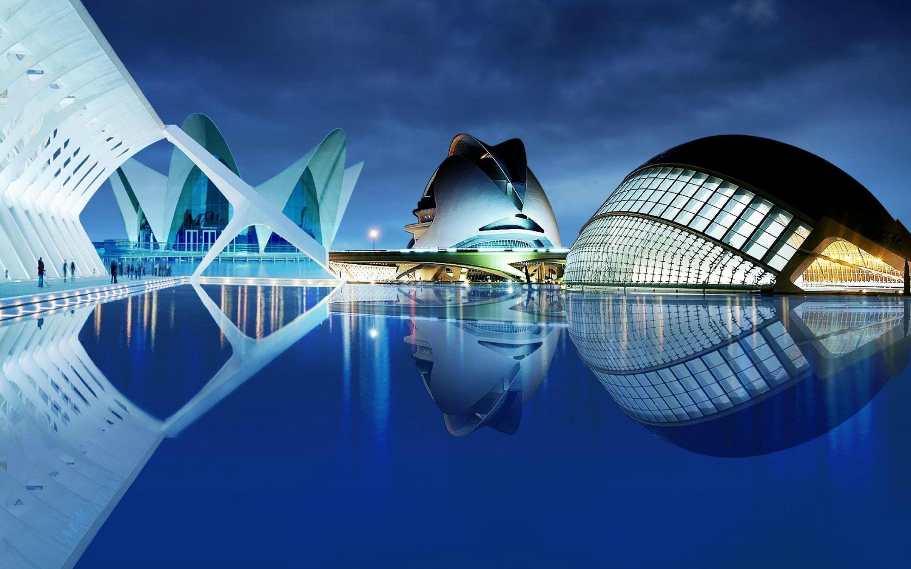
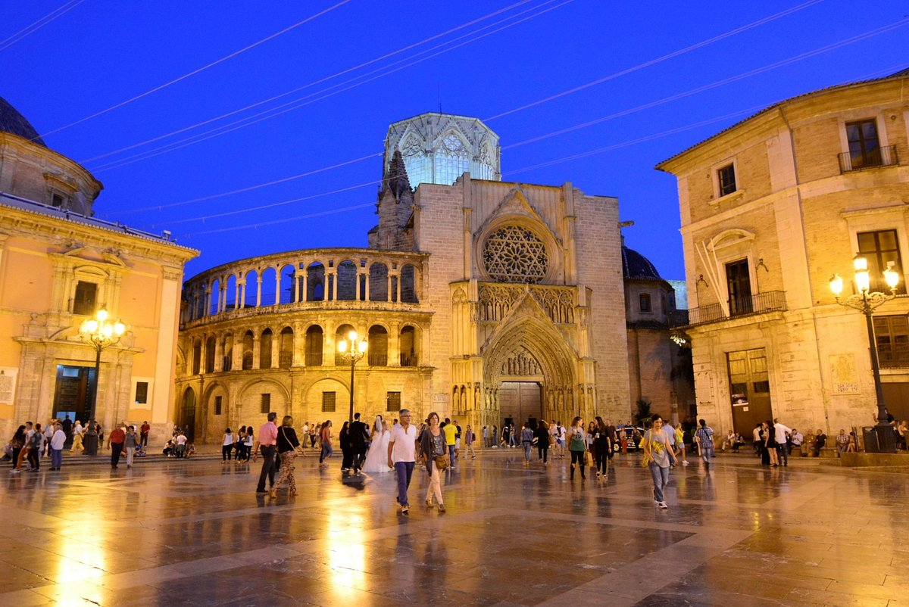
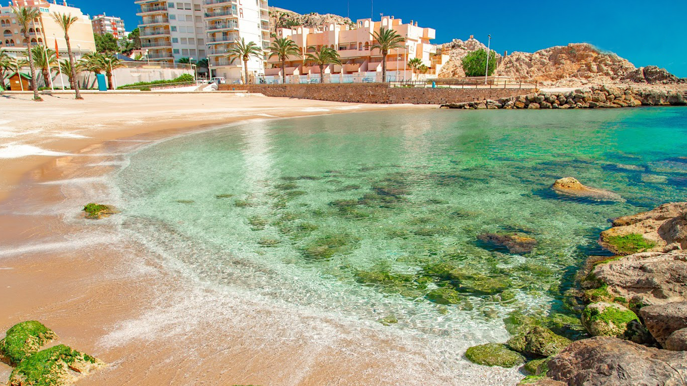

-
CIUDAD DE LAS ARTES Y LAS CIENCIAS
La Ciutat de les Arts i les Ciències es una visita imprescindible si vienes a Valencia. Obra del arquitecto valenciano Santiago Calatrava, tiene varios edificios que se han convertido en iconos de la ciudad. Se trata de un complejo de ocio científico y cultural para disfrutar en familia o con amigos que hoy en día ocupa alrededor de dos kilómetros del antiguo cauce del río Turia.
-
CASCO HISTÓRICO
El Barrio del Carmen, que se sitúa en el extremo noroeste del casco histórico, es el más conocido de cuantos posee València. Recibe su nombre de la iglesia y el convento del Carmen Calzado y viene precedido por una bien merecida fama de edén para los amantes de la gastronomía y el ocio mediterráneo. Estamos hablando de un área de Ciutat Vella con mil años de historia y con magníficos ejemplos de arquitectura medieval, un rico patrimonio artístico, centenares de anécdotas históricas y origen de un buen número de leyendas locales.
-
PLAYAS VALENCIANAS
El Cabanyal, la Malvarrosa y la Patacona Son las playas de València ciudad y están a tiro de piedra del centro y de sus muchas atracciones. Se trata de amplios arenales que gozan de todo tipo de equipamientos. Dispones de todos los servicios que puedas imaginar para tu comodidad a lo largo de tres kilómetros y medio. Sin interrupción.